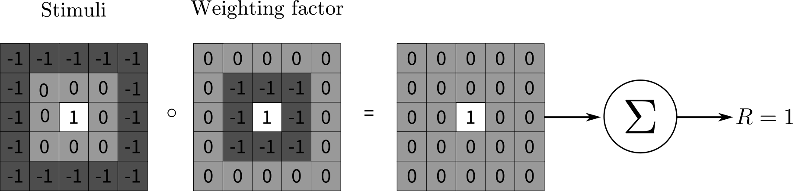

Linear Information Processing
A neuron is regarded as a linear system when it responds linearly to visual stimuli. In these neurons the response \( R \) to a linear combination of two stimuli is equal to the linear combination of the responses to each of the component stimulus. This can be expressed mathematically as
\begin{equation} R(a S_1 + b S_2) = a R( S_1) + b R( S_1), \end{equation}
for any constant \( a \) and \(b\) and for any stimulus \( S_1\) and \(S_2\). The response, i.e. the firing rate, of linear cells evoked by a stimulus \(S\), is usually expressed as a weighted sum of the stimulus. To do this we make the reasonable assumption that the retinal area can be subdivided into small pixels. At each pixel location \((x_i, y_j)\) the value of a (stationary) stimulus is given by \( S(x_i, y_j)\), which is weighted by a weighting factor \(F (x_i, y_j)\). Then, by the linear superposition principle, we can construct the response of a cell with its center at \(( x_{c}, y_{c} ) = (0,0)\) as the sum over the contributions of the individual pixels and obtain
\begin{equation} R = R_{0} +\displaystyle\sum_i\sum_j F(x_i, y_j) S(x_i, y_j), \end{equation}
where the term \( R_0\) accounts for any background firing that may occur when there is no stimulus. Assuming that the number of pixel is large, we may write
\begin{equation} R = R_{0} +\displaystyle \iint_\mathbf{r} F(\mathbf{r}) S(\mathbf{r}) \; \mathrm{d}^2 \mathbf{r}, \end{equation}
where the integral is taken over the entire visual field. Note that sometimes for mathematical convenience the integral boundaries are set to \(\pm \infty \), since the receptive fields are effectively localized and different from zero only on a small area of the visual field.
The weighting function \(F \) is the receptive field function of the neuron, and can be considered as a pattern for a particular "image feature" for which the neuron is a detector. This becomes obvious by noticing that the integral in the equation above measures the mismatches between the stimulus and the receptive field function. When these two functions overlap fully, the value of the integral increases and thereby also the response of the cell.

Illustration of linear information processing. The stimuli values in each small square is weighted with the corresponding square in the weighting factor. The sum of all these weighted stimuli values gives the response. Mathematically this corresponds to the sum of elements of the resulting matrix from the entrywise product ( \(\circ \) ) of the stimuli matrix and weighting factor matrix.